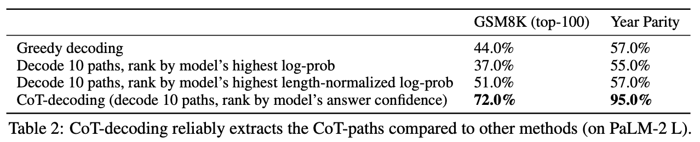
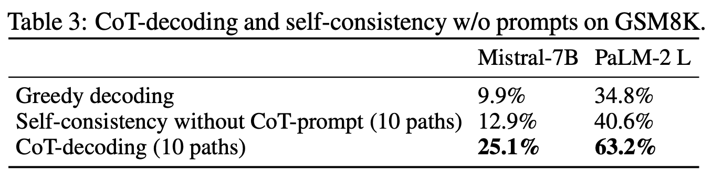
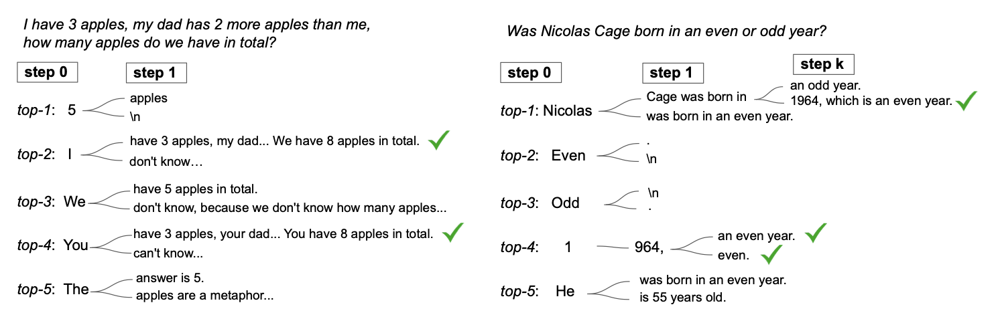
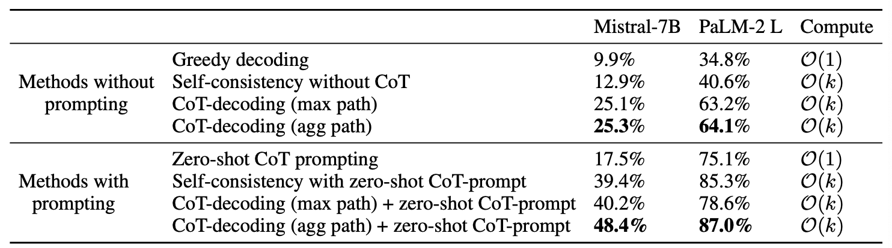
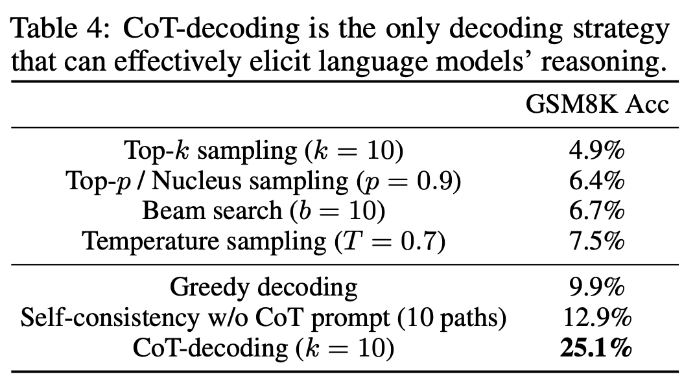
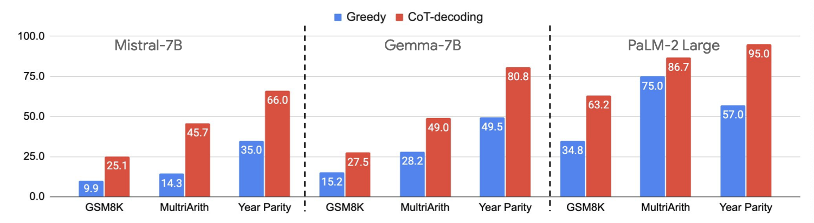
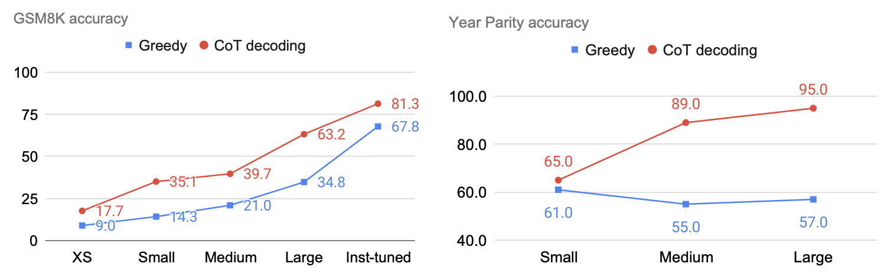
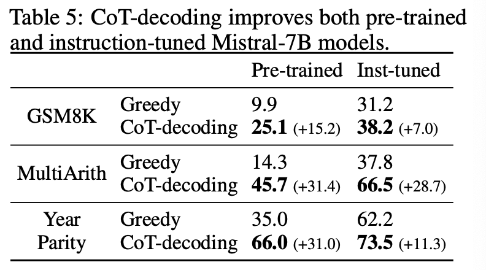
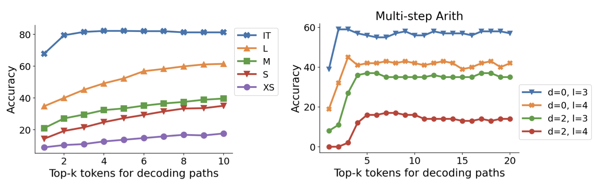

Chain-of-Thought Reasoning without Prompting
Jan. 07, 2025 - Feb. 07, 2025 · Qiyao Wang · Topic #Reasoning
大模型的推理最近很火，我个人对于推理的理解是基于线索或前面的推理逻辑不断向后有逻辑地延伸，这或许和自回归的形式很像，Denny Zhou 的这篇论文[1]通过修改贪婪解码（greedy decoding）为基于 CoT-Decoding 的有选择性的 top-k decoding，从无需提示（without prompting）的视角来探索或观察大模型内部的推理。本文将首先详细介绍这篇论文，之后进行代码实现，希望能在一周写完 😁。
论文精读与思考
The Introduction of Research Question
在本文之前，大部分的论文聚焦在利用 Prompting 的方式来激发 LLMs 的推理能力，如 ICL 中的 Few-Shot Learning 在测试问题前给定几个与测试问题类似的示例，这些示例中通常包含着对应问题解决方案的推理流程，概括的说即给定具有中间步骤的少样本提示（Few-Shot），或使用零样本（Zero-Shot）提示的方式指导模型给出相应的中间步骤，例如 (Nye et.al, 2021[2,3]） 在 LLMs 出现之前就尝试使用 XML 格式来指导模型在给出正确答案之前在 <scratch> computing process </scratch> 中给出计算过程，之后再给出答案，以及利用显式的思维链提示[4] Let's think step by step. 激发模型的推理能力，使得大模型在输出最终答案之前能够给出一定的推理过程。除 prompting 方法外，还可以通过 model training 或 instruction tuning 来激发模型的推理能力，但这样的方式通常会使得模型在通用能力上产生灾难性遗忘的效果，在数据层面，基于参数训练的方法还需要构造大量的 CoT 的推理数据，成本较高。
提示方法的关键是如何在大模型回答最终答案之前给出一定的推理中间过程（intermediate steps），这个中间过程是推理的关键。除提示方法外，也有利用 model training 和 instruction tuning 来提升模型生成中间步骤能力的方法，但是这样的方法与基于 prompt 的方法，都受限于 “instruction/prompt”，有时候需要不断地修缮你精心设计的 prompt 才有可能提升一些性能。本文提出了这样的问题，在无需精心设计提示的情况下，如何激发LLMs的推理能力？，以及 如何更好地理解模型自身的内部推理能力？ 但大模型通常倾向于直接输出最终的问题结果，本文从解码过程出发，提出了CoT-decoding，能够不基于提示，激发模型的推理能力（生成中间的推理步骤）。
CoT-Decoding Methodology
为了在无需 prompting 的前提下激发模型的推理能力，本文从 decoding 阶段出发，先不考虑包含 top-k、top-p 及 temperature 在内的采样方法，大语言模型可以通过 greedy decoding 的方式来采样，即每次选择出现概率最大的 Token。本文的基本思路是，在第一个解码步（first decoding step）时，不仅只采样 greedy decoding 对应的 Token，而是引入超参数 k，选择第一个解码步中 top-k 个 Tokens，在后续的解码步中，分别对该 k 个 Token 进行贪婪解码，如图 1 所示。
在获得第一个解码步的 k 个 Tokens 对应的 CoT-Path 后，一个很自然的问题是：如何选择正确的/恰当的 CoT-Path？在 Self-Consistency[5] 中通过聚合采样后的答案，选出其中投票次数（出现最多）的答案作为最终的结果，这是从一致性角度看来十分自然的。本文的 CoT-Decoding 为每条 CoT-Path 引入了置信度（confidence），其中关注每个解码步骤，对于 第 $k$ 个 CoT-Path 的置信度计算如下
$$ \Delta_{k,\text{answer}} = \frac{1}{|\text{answer}|}\sum_{x_t\in\text{answer}}p(x_t^1|x_{< t})-p(x_t^2|x_{< t}) $$即，在给定前 $t-1$ 个 Tokens 解码第 $t$ 步时，第 $t$ 步中概率最大的两个 Token $x_t^1$ 和 $x_t^2$ 的差值，从该 CoT-Path 的第一个 Token 到结尾 Token 的该差值之和的归一化即为置信度。这样的定义能够得到所有解码步中采样该 Token 的平均置信度，但是我认为（作者在结论中也有提到）这种置信度计算方法似乎不太准确，因为并不是所有步的置信度都是同等重要。通过该置信度的计算方式，所有的 $k$ 个解码路径都能够被对应的 $\Delta$ 值进行标记。图 1 中右下角的图例可以看到颜色越深则代表该 CoT-Path 的 confidence $\Delta$ 越大，甚至这样的指标在该问题示例上与结果的正确性有一定的相关性，即在正确答案上的置信度大于错误答案；与 greedy decoding 这种没有 CoT-Path 的采样结果相比，CoT-Path 具有更大的 $\Delta$。同时作者阐明，在 $k=10$ 的 top-10 解码路径中抽取最大置信度的路径的实验中，88% 的数据都存在 CoT-Path。如图 2 所示，为 PaLM-2 模型在 GSM8K 和 Year Parity 数据集上的示例，其中括号中的蓝色数字即表示对应 CoT-Path 的置信度。
从上述内容可以看到，预训练语言模型可以通过考虑多个可能的 first step token 来获得关键的中间步骤，这些中间步骤能够提升对应的答案的置信度，而只考虑 greedy decoding 时，其中大多不包含相应的中间步骤，而是直接输出答案，这也造成对应的 greedy decoding path 的置信度相对较低。
在 CoT-Decoding 的置信度计算方法中，如果计算上文所说的在全句视野上计算相应的分数可能会引入一些不必要的 token，因此识别相应的答案区间是十分重要的，如图 2 中最好的置信度计算区间是 “60” 的两个 token “6” 和 “0”，可以通过引入 prompt So the answer is 来指导模型输出结果，但这可能与本文 “without prompt” 相悖，会不会使得模型更倾向于直接输出答案？文中并未进行实验，是一个可以思考的点。
Findings
本文不过多阐释具体的实验内容及数据集等，而是以作者报告的相关发现为脉络对实验结果进行展示与分析。
-
CoT-Decoding can extract CoT-Paths more reliably than other extraction methods.
下面的实验通过修改不同的解码方式和对解码路径的排序方式来说明 CoT-Decoding 的置信度方法在 CoT-Path 路径的选择上的优势。图 3 中第一行贪婪解码 Greedy decoding，只选择 first step tokens 中概率最大的 token 进行后续的一系列解码步骤（同样是贪婪解码）；图 3 中后三行均代表采取选择多个（此处固定 $k=10$） first step token 的 CoT-Path，其中 CoT-Path 的最终选择方式分别为：对数概率最大的，长度正则化后对数概率最大的以及本文的置信度方式。可以看到的是，CoT-Decoding 的置信度方法在 GSM8K 和 Year Parity 两个数据集上的性能提升十分显著。
 图3：PaLM-2 L 模型上对不同的 CoT-Path 抽取方法的实验结果。 -
CoT-Decoding can extract CoT-Paths more usefully than other approaches.
上文也提到了 Self-Consistency[5] 以采样多次投票的方式选出更可靠的 CoT-Path，本文对比了在没有 CoT-Prompt（Let's think step by step）的情况下 Self-Consistency 和 CoT-Decoding 的效果，可以发现，在没有 CoT-Prompt 的情况下，CoT-Decoding 在 GSM8K 上的性能能够显著优于贪婪解码和 Self-Consistency，CoT-Decoding 通过能够选择多个 first step token 来引入 CoT-Path 的多样性。
 图4：CoT-Decoding and self-consistency without prompts on GSM8K. -
Branching at other decoding steps.
本文 CoT-Decoding 在 first step tokens 中进行分支，即图 5 中的 Step 0，如图 5 所示，其中讨论了两个问题在不同的解码步骤均进行分支，first step 的分支可以有效地提升 CoT-Path 的多样性，由于这样一种自回归解码的方式，后续的分支会受到前序解码步骤的影响，如果前序分支中存在错误会严重地影响后续解码的正确性个。分支的深度对于不同的任务而言，适合的深度也不同。
 图5：不同分支深度的讨论。 -
Aggregation of the decoding paths can enhance the stability of the results.
借鉴 Self-Consistency 的思想，可以想到如果将 top-k 个 CoT-Path 中答案相同的路径聚合，为每个可能的答案提供一个权重，最后选择权重最大的答案。如下式所示
$$ \tilde{\Delta}_a=\sum_k\Delta_{k,a} $$其中 $\Delta_{k,a}$ 表示第 $k$ 条解码路径，答案为 $a$。如图 6 所示，聚合路径的方式在有无 prompt 的情况下，均达到了最优的性能。
 图6：将 CoT-Decoding 和 CoT-Prompting 结合。 同时可以看出，将 CoT-Prompting 和 CoT-Decoding 结合，能够达到更好的效果，同时在有无 prompt 的情况下，性能优于 Self-Consistency。
-
CoT-Decoding can elicit reasoning from language models effectively.
-
Comparison with different methods.
与其他的采样方法相比：Top-k sampling、Top-p sampling、Beam search、Temperature sample。将最基础的贪婪解码作为模型是否推理的 board line，可以看到，这些采样方法都无法激活模型的推理能力，甚至会有所损失，而 CoT-Decoding 能够达到 25.1% 的性能，相对贪婪解码而言大幅度提升。
 -
CoT-decoding effectively elicits reasoning across language models and model scales.
该部分讨论了 CoT-Decoding 的泛化能力与 Scale up 的能力，如图 8 所示，在不同的模型上，CoT-Decoding 相较于 Greedy decoding 而言均展现了更好的性能，同时如图 9 所示，CoT-Decoding 能够在不同参数量的模型上 Scale up，随着模型参数量的增加模型的性能也提升，而在 Year Parity 任务上，CoT-Decoding 同样能进行 Scale up，但是贪婪解码却无法 Scale up，甚至在更大的模型上的性能更差。
 图8：CoT-Decoding 在不同模型上的性能。  图9：CoT-Decoding 在不同参数量模型上的性能。
-
-
CoT-Decoding partially closes the reasoning gap between pre-trained and instruction-tuned models.
上面的实验均是在预训练模型上进行的，指令微调模型具有更好的指令遵循能力以及在训练过程中的一些监督数据就包含了推理过程，这为模型的推理提供了一些基础。如图 10 所示，可以看到 CoT-Decoding 为预训练模型和指令微调模型均能带来相应的收益，但指令微调的收益小于 CoT-Decoding，这或许说明存在一定的推理能力瓶颈。
 图10：预训练模型与指令微调模型对比 通过选择不同的 $k$，如图 11 所示，可以看到随着 $k$ 的增加，准确率也随之上升，但是在指令微调模型上在一定的 $k$ 值后达到稳定，在更难的 Multi-step Arith 任务上，指令微调模型也显示出更为靠前的 $k$ 的稳定值，这可能表明，指令微调可以帮助模型将推理步骤带到更为靠前的解码步骤上。
 图11：不同 $k$ 值下的情况
Reference
[1] Wang X, Zhou D. Chain-of-Thought Reasoning Without Prompting [C]. The Thirty-Eighth Annual Conference on Neural Information Processing Systems (NeurIPS 2024).
[2] Nye M, Andreassen AJ, Gur-Ari G, et al. Show Your Work: Scratchpads for Intermediate Computation with Language Models [C]. ICLR, Deep Learning for Code Workshop, 2022.
[3] Blog: https://leehanchung.github.io/blogs/2024/10/21/reasoning-inference-scaling/
[4] Wei J, Wang X, Schuurmans D, et al. Chain-of-thought prompting elicits reasoning in large language models[J]. Advances in neural information processing systems, 2022, 35: 24824-24837.
[5] Wang X, Wei J, Schuurmans D, et al. Self-Consistency Improves Chain of Thought Reasoning in Language Models[C]. The Eleventh International Conference on Learning Representations.
Contact
There may be some errors present. If you find any, please feel free to contact me at wangqiyao@mail.dlut.edu.cn. I would appreciate it!